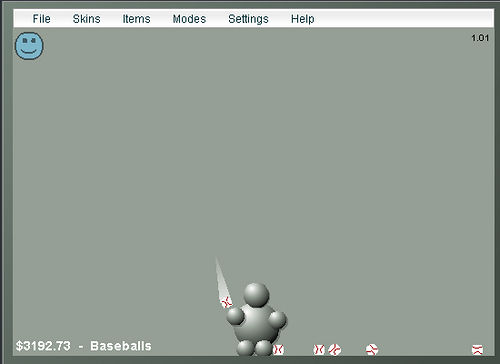
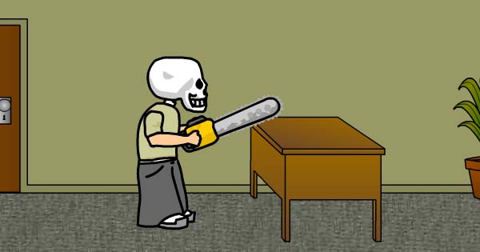
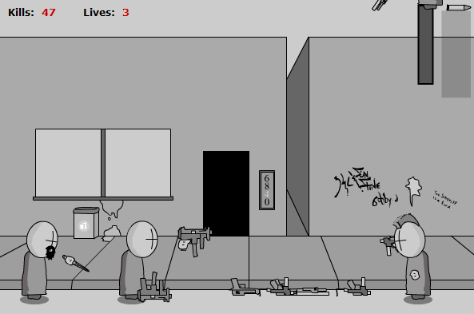

Newgrounds is an online entertainment website and company. It hosts user-generated content such as games, films, audio and artwork composition in four respective website categories. Newgrounds provides visitor-driven voting and ranking of user-generated submissions

Homestuck
Goal: You are Skull Kid, an insane office worker that wants to kill everyone at the office. Can you make it to the boss?
Madness Interactive
Desc: An extensive game based on the Madness Combat animations by Krinkels.
